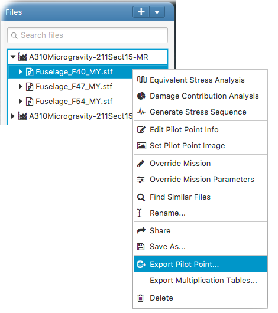

This opens the export pilot point panel. In the panel, basic pilot point attributes such as pilot point name, spectrum name, fatigue mission (in case it is overridden by the pilot point) and etc. can be edited. You can also supply a descriptive image for the pilot point when available. This will export the pilot point with the information into a zip archive. The archive can then be sent to the database administrator for uploading into ESCSAS database.